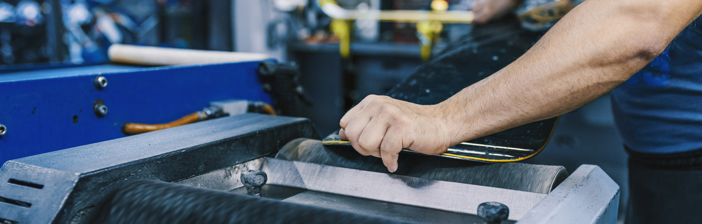

Chcete aby bola vaša výstroj opäť ako nová, vaša jazda bezpečná a plynulá? Zverte svoju výstroj do rúk našich odborných servisných pracovníkov. Na servisnom stroji RoffB ošetria hrany a sklznicu lyžiarskeho alebo snowboardového výstroja, namontujú a správne nastavia viazanie, vykonajú drobné opravy a náradím Holmenkol ručne urobia pretekársky servis.  Ski servis nájdete pár metrov od spodnej stanice vleku B - Rekreačný v objekte Chata Dvojka. Informácie a rezervácie termínov na čísle +421 907 202 396.